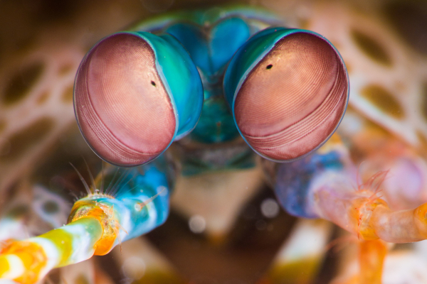
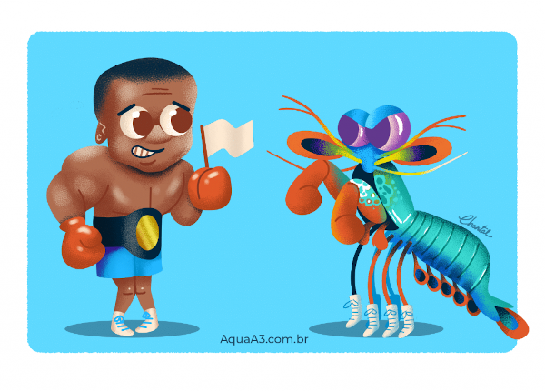

Fatos sobre o Stomatopoda
Informações gerais
- Nome científico: Stomatopoda (por exemplo, Odontodactylus scyllarus)
- Outros nomes: Stomatopod, gafanhoto do mar, separador de polegar, matador de camarão
- Tamanho médio: 10 centímetros (3,9 pol.)
- Dieta: Carnívoro
- Vida útil: 20 anos
- Habitat: Ambientes marinhos tropicais e subtropicais rasos
- Estado de conservação: Não avaliado
- Reino: Animalia
- Filo: Arthropoda
- Subfilo: Crustáceos
- Classe: Malacostraca
- Ordem: Stomatopoda
Olhos incriveis
Estomatopodes têm a visão mais complexa no reino animal, excedendo até a das borboletas. O camarão mantis tem olhos compostos montados em caules e pode girá-los independentemente um do outro para examinar seus arredores. Enquanto os humanos têm três tipos de fotorreceptores, os olhos de um camarão mantis têm entre 12 e 16 tipos de células fotorreceptoras. Algumas espécies podem até ajustar a sensibilidade de sua visão de cores.

Força absurda
Os Odontodactylus scyllarus, são capazes de desferir um dos mais rápidos e violentos golpes do reino animal, um soco que pode apresentar a velocidade de um tiro calibre .22 (equivalente a 720 km/h) e uma pressão de impacto de 600 N/cm². Essa força esmagadora é a responsável pelo seu título de "lagosta-boxeadora" e é capaz de facilmente quebrar a carapaça de um caranguejo, as conchas duras e calcificadas de gastrópodes ou até mesmo quebrar o vidro reforçado de um aquário
